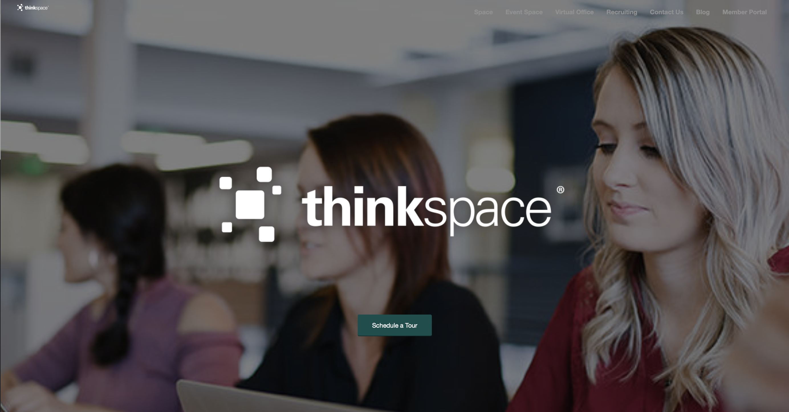
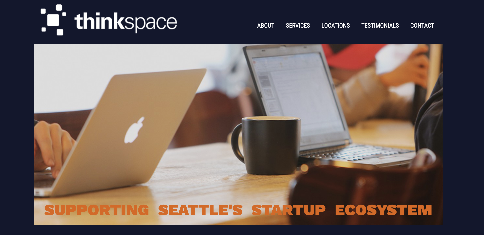

thinkspace Case Study
The Challenge
This concept was born at a hackathon which thinkspace hosted at their co-working venue in Seattle. They presented the following problem to us hackers: how would we improve the thinkspace website?
Given the time limit of three hours, there were many problems that couldn’t be addressed, particularly deeper into the site, but I chose to focus on user experience issues by making the site easier to read and understand from the start, that is: the home page. Here it is as I found it.
The challenges I identified:
- Extremely poor legibility (which means the site is certainly not accessible), with gray text on white background.
- Unclear hero image - how does this photo of three young woman relate to the thinkspace business? Who are they; what are they doing? It read to me as if they are students attending class, which is quite far from what thinkspace represents.
- Confusion regarding the nav bar: "space" vs. "event space" vs "virtual office" … what are all these different kinds of spaces? As a visitor, I don’t understand the nuances, or which one I need.
- There are two thinkspace logos on this homepage; the one in the center, and another at the top left that is so tiny as to be almost invisible. Why have two, and why should one be nearly invisible?
The Solution
The solutions I created:
- I chose a color palette that allowed for more contrast between the text and background, making everything easier to read, and accessible.
- Additionally, the color palette is now sharper and fresher overall. Complementary blues, grays and oranges visually convey a dynamism because they’re opposites on the color wheel. This opposition creates a push-pull effect on our eyes that translates to movement - quite literally, within our eyes, but also symbolically. This dynamic color scheme is meant to appeal to their key demographic of savvy professionals who are on the move - professionally, figuratively, and literally.
- I changed the hero image to one that communicates a sense of what the business is about: a shared, friendly workspace full of caffeinated energy and purpose.
- I cleaned up the nav bar to combine all the mentions of “space”. I streamlined all previous mentions of "space" under the heading of “Services”, which encompasses their many offerings, from several kinds of “space” for different purposes, to business support services.
- I clearly displayed the thinkspace logo at the top left.
The site now makes it easy to quickly understand - directly, from clear, legible text and indirectly, from visual cues like color and well-chosen images - what thinkspace offers.